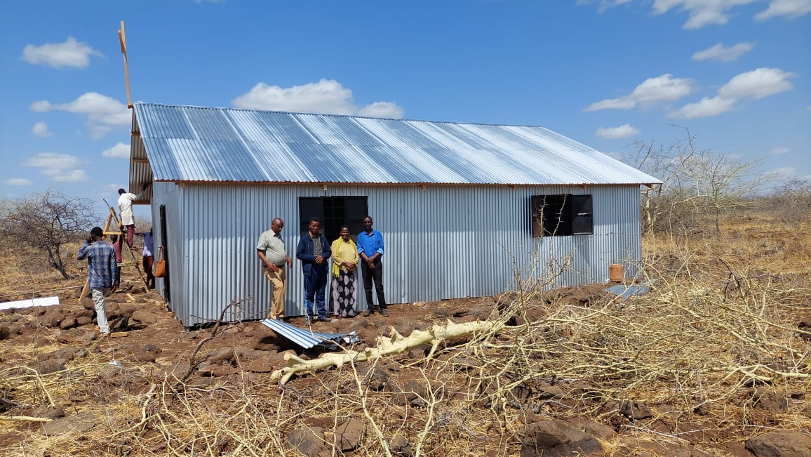

The church’s mission is underpinned by two fundamental objectives:
1.Evangelization and Discipleship:
OCFN's core mission focuses on evangelizing to refugees and the local Oromo community in Nairobi, aiming to transform them into committed disciples of Jesus Christ ready for spiritual endeavors and kingdom-building. This mission is particularly challenging as the church primarily serves refugees, who arrive with significant physical and spiritual burdens. With a congregation largely composed of young members, OCFN's role is crucial. Through dedicated outreach and discipleship, OCFN has nurtured many into pastors, evangelists, and church leaders globally. The church also actively works to protect its youth from destructive addictions, serving as a stabilizing force in the community.
Fig. 2: OCFN Church celebrates Christmas, marking the birth of Lord Jesus Christ.
2.Outreach to the Borana Community:
OCFN has extended its missionary efforts beyond Nairobi, reaching out to the Borana community in Northern Kenya, particularly in Marsabit County near the Ethiopian border—a region approximately 700 km from Nairobi, the capital of Kenya. Despite operating with limited resources, the church's fervent commitment to spreading the Gospel has led to remarkable achievements. OCFN's efforts have facilitated the establishment of twelve new churches in the region, collectively bringing over 5,000 new souls into the Kingdom of God. Furthermore, the church has deployed 15 dedicated missionaries who continue to work tirelessly to expand these outreach efforts.
These examples showcase OCFN's significant impact both locally and regionally, transforming the spiritual landscape through dedicated missionary work among the Borana and support in Nairobi. OCFN remains a symbol of resilience and faithfulness. The following photos from a field trip illustrate OCFN's activities and support in Marsabit County, Kenya.
Fig. 3: A new church studies the word of God and prays under a tree.

Fig. 4: A church made from iron sheets was built with OCFN support for the people shown in Figure 2

Fig. 5: A large church built with financial support from OCFN.

Fig. 7: A choir from a Marsabit church in new uniforms funded by OCFN.